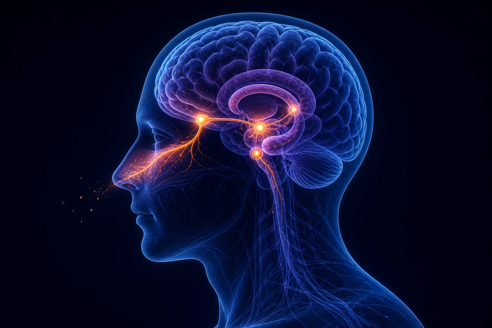
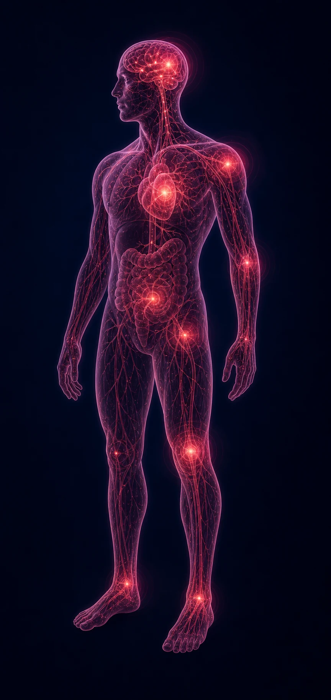

Neurophysiological scent science
Scented Therapy
Regulatory Pathways
From aroma and skin entry to
multisystem neurophysiological regulation
Olfactory–Brain Regulatory Pathways of Scented Therapy
The six core neurophysiological regulatory axes
Dermal–Systemic Regulatory Pathways of Scented Therapy
Five core skin regulatory axes

Scent-Induced Neurophysiological Modulation in Disease

2 Central Integration
Limbic System
- Emotion
- Memory
- Motivation
- Stress response
- Homeostasis
Hypothalamus
- HPA axis
- Lipid signaling
- Melatonin signaling
- Homeostasis
4 Disease-Related Physiological Dysregulation
Dysregulation across multiple systems contributes to diverse disease states.
